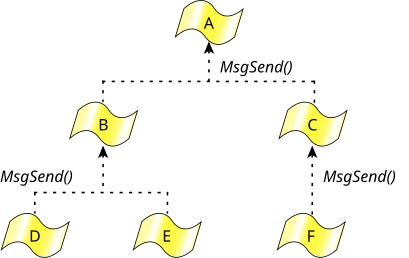

Architecting a QNX OS application as a team of cooperating threads and processes via Send/Receive/Reply results in a system that uses synchronous notification. IPC thus occurs at specified transitions within the system, rather than asynchronously.
A significant problem with asynchronous systems is that
event notification requires signal handlers to be run.
Asynchronous IPC can make it difficult to thoroughly test
the operation of the system and make sure that no matter
when the signal handler runs, processing will continue
as intended. Applications often try to avoid this scenario
by relying on a window
explicitly opened and
shut, during which signals will be tolerated.
With a synchronous, nonqueued system architecture built around Send/Receive/Reply, robust application architectures can be very readily implemented and delivered.
Avoiding deadlock situations is another difficult problem when constructing applications from various combinations of queued IPC, shared memory, and miscellaneous synchronization primitives. For example, suppose thread A doesn't release mutex 1 until thread B releases mutex 2. Unfortunately, if thread B is in the state of not releasing mutex 2 until thread A releases mutex 1, a standoff results. Simulation tools are often invoked in order to ensure that deadlock won't occur as the system runs.
The Send/Receive/Reply IPC primitives allow the construction of deadlock-free systems with the observation of only these simple rules:

Here the threads at any given level in the hierarchy never send to each other, but send only upwards instead.
One example of this might be a client application that sends to a database server process, which in turn sends to a filesystem process. Since the sending threads block and wait for the target thread to reply, and since the target thread isn't SEND blocked on the sending thread, deadlock can't happen.
But how does a higher-level thread notify a lower-level thread that it has the results of a previously requested operation? (Assume the lower-level thread didn't want to wait for the replied results when it last sent.)
back channelfor notifications from higher-level threads to lower-level threads, we can also build a reliable notification system for timers, hardware interrupts, and other event sources around this.
senda pulse event.
A related issue is the problem of how a higher-level thread
can request work of a lower-level thread without sending to
it, risking deadlock. The lower-level thread is present only
to serve as a worker thread
for the
higher-level thread, doing work on request. The lower-level
thread would send in order to report for work,
but the higher-level thread wouldn't reply then. It would
defer the reply until the higher-level thread had work to be
done, and it would reply (which is a nonblocking operation)
with the data describing the work. In effect, the reply is
being used to initiate work, not the send, which neatly
side-steps rule #1.